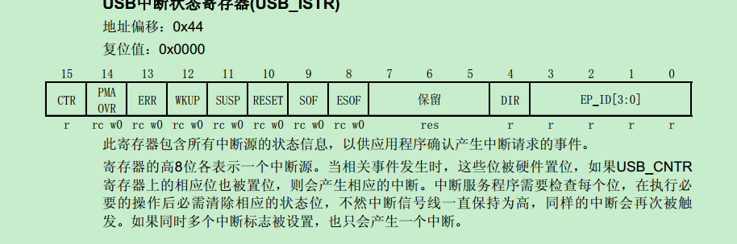
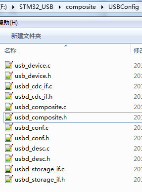
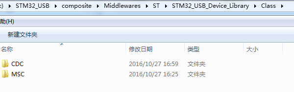
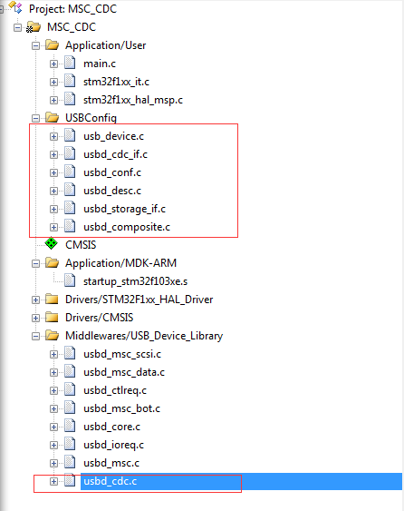

STM32 USB composite deveice
Updated:
目的
- 完成一个CDC + MSC的复合USB设备
- 可以方便在CDC,MSC,复合设备三者间切换
- 可移植性强
预备知识
cube中USB只有两个入口。
main函数中的MX_USB_DEVICE_Init函数。
123456789/* init function */void MX_USB_DEVICE_Init(void){/* Init Device Library,Add Supported Class and Start the library*/USBD_Init(&hUsbDeviceFS, &FS_Desc, DEVICE_FS);USBD_RegisterClass(&hUsbDeviceFS, &USBD_COMPOSITE_CLASS);USBD_MSC_RegisterStorage(&hUsbDeviceFS, &USBD_Storage_FS);USBD_Start(&hUsbDeviceFS);}USB中断。USB的所有动作都是主机发起的，设备只是做响应。所以在cube中，所有的USB动作入口都是一个中断。
12345678910void USB_LP_CAN1_RX0_IRQHandler(void){/* USER CODE BEGIN USB_LP_CAN1_RX0_IRQn 0 *//* USER CODE END USB_LP_CAN1_RX0_IRQn 0 */HAL_PCD_IRQHandler(&hpcd_USB_FS);/* USER CODE BEGIN USB_LP_CAN1_RX0_IRQn 1 *//* USER CODE END USB_LP_CAN1_RX0_IRQn 1 */}
看一下中断响应函数的内容
可以看出来，中断响应函数根据各个不同的中断源做出不同的操作。这点在参考手册也有提到

在USB插入之后，主机开始进行枚举，复位USB，触发复位中断，会进入下面一个if语句。
这两个函数主要是设置总线速度，复位USB，以及设置USB地址。分析了这两个函数，基本了解了程序的流程，主要是两个关键的结构体
这两个结构体很关键，看下复位操作的函数
这里有一个强制类型转换，将一个void指针强制转换为USBD_HandleTypeDef，那么这个指针必然一早就指向了一个实体的USBD_HandleTypeDef，向上追朔调用关系
main->MX_USB_DEVICE_Init->USBD_Init->USBD_LL_Init->pdev->hpcd_USB_FS.pData = pdev
然后，hpcd_USB_FS作为中断处理函数的参数被传进来。
SetSpeed比较简单，只是将hUsbDeviceFs中的dev_speed设置一下。
Reset函数则是将端点0的IN OUT端点打开，然后有一句
pdev->pClass->DeInit(pdev,pdev->dev_config)
这里又是一个USBD_ClassTypeDef类型的指针
可以看到这个类定义都是函数指针，在调用之前必定实例化(借用面向对象来词汇)过。
main -> MX_USB_DEVICE_Init->USBD_RegisterClass->pdev->pClass=pclass
如果是CDC类，那么最终指向的是在usbd_cdc.c中的USBD_CDC类，如果是复合类，那么就需要我们自己定义。
在调用DeInit过程中，又会调用两个void 指针：pclassData,pUserData
其中pClassData是初始化是在初始化各个类的时候，比如
- MSC类
USBD_MSC_Init -> pdev->pClassData = USBD_malloc(sizeof (USBD_MSC_BOT_HandleTypeDef));
- CDC类
USBD_CDC_Init -> pdev->pClassData = USBD_malloc(sizeof (USBD_CDC_HandleTypeDef));
不同的类，指向不同的函数指针。
pUserData是通过一个函数初始化，比如CDC类
main -> USBD_CDC_RegisterInterface(&hUsbDeviceFS, &USBD_Interface_fops_FS);
USBD_Interface_fops_FS定义如下：
pClassData和pUserData在USBD_HandleTypeDef中是指针形式，所以在调用不同类的时候，改变指针的指向，即可完成不同类的功能。我们复合设备类的设计思想既是如此。
可以总结一下 USBD_HandleTypeDef中几个复杂的指针
- pDesc指向描述符的数组，在枚举阶段启用
- pClass指向设备类，比如CDC类的USBD_ClassTypeDef，负责类的底层Init,Setup,DataIn/Out等
- pClassData指向设备类句柄，负责记录数据，比如RxBuffer,TxBuffer,RxLength等
- pUserData指向设备类的接口操作函数，比如CDC的Init,Receive,Transmit，比如MSC的Read，Write等
- pData指向hpcd_USB_FS
注意点：
pClassData要在堆上动态生成，不能调用静态分配函数，否则两次分配会被分配到同一段内存中
12在pClass->Init之后，pClassData分配完成，此时需要一个全局指针将这个pClassData记录下来
- 在pClass->DeInit时，pClassData根据不同的类读回之前的全局指针,然后free掉堆上的内存
- 由于使用了两次malloc所以heap_size要分配足够大，同时也要注意修改stack_size。12Stack_Size EQU 0x1000Heap_Size EQU 0x800
准备工作
- 利用cube生成一个CDC工程和一个MSC工程，将CDC工程中的usbd_cdc以及usbd_cdc_if文件拷贝出来。
- 修改都在MSC工程下面完成。在工程下建立一个USBConfig文件夹，将之前拷贝的文件以及其他USB配置相关的文件放到这个文件夹下面。
- 新建一个usbd_composite.c，usbd_composite.h，添加到工程。整体文件结构如下：



- 编译(注意添加头文件路径)
修改
- 分配好端点号
|
|
|
|
- 将如下内容添加到usbd_composite.c以及usbdcomposite.h123456789101112131415161718192021222324252627282930313233343536373839404142434445464748495051525354555657585960616263646566676869707172737475767778798081828384858687888990919293949596979899100101102103104105106107108109110111112113114115116117118119120121122123124125126127128129130131132133134135136137138139140141142143144145146147148149150151152153154155156157158159160161162163164165166167168169170171172173174175176177178179180181182183184185186187188189190191192193194195196197198199200201202203204205206207208209210211212213214215216217218219220221222223224225226227228229230231232233234235236237238239240241242243244245246247248249250251252253254255256257258259260261262263264265266267268269270271272273274275276277278279280281282283284285286287288289290291292293294295296297298299300301302303304305306307308309310311312313314315316317318319320321322323324325326327328329330331332333334335336337338339340341342343344345346347348349350351352353354355356357358359360361362363364365366367368369370371372373374375376377378379380381382383384385386387388389390391392393394395396397398399400401402403404405406407408409410411412413414415416417418419420421422423424425426427428429430/*** @file usbd_composite.c* @author Weyne* @version V01* @date 2016.10.28* @brief MSC + CDC 复合设备* @note* @attention COYPRIGHT WEYNE*/static USBD_CDC_HandleTypeDef *pCDCData;static USBD_MSC_BOT_HandleTypeDef *pMSCData;static uint8_t USBD_Composite_Init (USBD_HandleTypeDef *pdev,uint8_t cfgidx);static uint8_t USBD_Composite_DeInit (USBD_HandleTypeDef *pdev,uint8_t cfgidx);static uint8_t USBD_Composite_EP0_RxReady(USBD_HandleTypeDef *pdev);static uint8_t USBD_Composite_Setup (USBD_HandleTypeDef *pdev,USBD_SetupReqTypedef *req);static uint8_t USBD_Composite_DataIn (USBD_HandleTypeDef *pdev,uint8_t epnum);static uint8_t USBD_Composite_DataOut (USBD_HandleTypeDef *pdev,uint8_t epnum);static uint8_t *USBD_Composite_GetFSCfgDesc (uint16_t *length);static uint8_t *USBD_Composite_GetDeviceQualifierDescriptor (uint16_t *length);USBD_ClassTypeDef USBD_COMPOSITE ={USBD_Composite_Init,USBD_Composite_DeInit,USBD_Composite_Setup,NULL, /*EP0_TxSent*/USBD_Composite_EP0_RxReady,USBD_Composite_DataIn,USBD_Composite_DataOut,NULL,NULL,NULL,NULL,USBD_Composite_GetFSCfgDesc,NULL,USBD_Composite_GetDeviceQualifierDescriptor,};/* USB composite device Configuration Descriptor *//* All Descriptors (Configuration, Interface, Endpoint, Class, Vendor */__ALIGN_BEGIN uint8_t USBD_Composite_CfgFSDesc[USBD_COMPOSITE_DESC_SIZE] __ALIGN_END ={0x09, /* bLength: Configuation Descriptor size */USB_DESC_TYPE_CONFIGURATION, /* bDescriptorType: Configuration */WBVAL(USBD_COMPOSITE_DESC_SIZE),USBD_MAX_NUM_INTERFACES , /* bNumInterfaces: */0x01, /* bConfigurationValue: */0x04, /* iConfiguration: */0xC0, /* bmAttributes: */0x96, /* MaxPower 300 mA *//****************************CDC************************************//* Interface Association Descriptor */USBD_IAD_DESC_SIZE, // bLengthUSBD_IAD_DESCRIPTOR_TYPE, // bDescriptorTypeUSBD_CDC_FIRST_INTERFACE, // bFirstInterfaceUSBD_CDC_INTERFACE_NUM, // bInterfaceCount0x02, // bFunctionClass0x02, // bFunctionSubClass0x01, // bInterfaceProtocol0x04, // iFunction/*Interface Descriptor */0x09, /* bLength: Interface Descriptor size */USB_DESC_TYPE_INTERFACE, /* bDescriptorType: Interface *//* Interface descriptor type */USBD_CDC_CMD_INTERFACE, /* bInterfaceNumber: Number of Interface */0x00, /* bAlternateSetting: Alternate setting */0x01, /* bNumEndpoints: One endpoints used */0x02, /* bInterfaceClass: Communication Interface Class */0x02, /* bInterfaceSubClass: Abstract Control Model */0x01, /* bInterfaceProtocol: Common AT commands */0x01, /* iInterface: *//*Header Functional Descriptor*/0x05, /* bLength: Endpoint Descriptor size */0x24, /* bDescriptorType: CS_INTERFACE */0x00, /* bDescriptorSubtype: Header Func Desc */0x10, /* bcdCDC: spec release number */0x01,/*Call Management Functional Descriptor*/0x05, /* bFunctionLength */0x24, /* bDescriptorType: CS_INTERFACE */0x01, /* bDescriptorSubtype: Call Management Func Desc */0x00, /* bmCapabilities: D0+D1 */0x01, /* bDataInterface: 1 *//*ACM Functional Descriptor*/0x04, /* bFunctionLength */0x24, /* bDescriptorType: CS_INTERFACE */0x02, /* bDescriptorSubtype: Abstract Control Management desc */0x02, /* bmCapabilities *//*Union Functional Descriptor*/0x05, /* bFunctionLength */0x24, /* bDescriptorType: CS_INTERFACE */0x06, /* bDescriptorSubtype: Union func desc */USBD_CDC_CMD_INTERFACE, /* bMasterInterface: Communication class interface */USBD_CDC_DATA_INTERFACE, /* bSlaveInterface0: Data Class Interface *//*Endpoint 2 Descriptor*/0x07, /* bLength: Endpoint Descriptor size */USB_DESC_TYPE_ENDPOINT, /* bDescriptorType: Endpoint */CDC_CMD_EP, /* bEndpointAddress */0x03, /* bmAttributes: Interrupt */LOBYTE(CDC_CMD_PACKET_SIZE), /* wMaxPacketSize: */HIBYTE(CDC_CMD_PACKET_SIZE),0x01, /* bInterval: *//*Data class interface descriptor*/0x09, /* bLength: Endpoint Descriptor size */USB_DESC_TYPE_INTERFACE, /* bDescriptorType: */USBD_CDC_DATA_INTERFACE, /* bInterfaceNumber: Number of Interface */0x00, /* bAlternateSetting: Alternate setting */0x02, /* bNumEndpoints: Two endpoints used */0x0A, /* bInterfaceClass: CDC */0x02, /* bInterfaceSubClass: */0x00, /* bInterfaceProtocol: */0x01, /* iInterface: *//*Endpoint OUT Descriptor*/0x07, /* bLength: Endpoint Descriptor size */USB_DESC_TYPE_ENDPOINT, /* bDescriptorType: Endpoint */CDC_OUT_EP, /* bEndpointAddress */0x02, /* bmAttributes: Bulk */LOBYTE(CDC_DATA_FS_MAX_PACKET_SIZE), /* wMaxPacketSize: */HIBYTE(CDC_DATA_FS_MAX_PACKET_SIZE),0x01, /* bInterval: ignore for Bulk transfer *//*Endpoint IN Descriptor*/0x07, /* bLength: Endpoint Descriptor size */USB_DESC_TYPE_ENDPOINT, /* bDescriptorType: Endpoint */CDC_IN_EP, /* bEndpointAddress */0x02, /* bmAttributes: Bulk */LOBYTE(CDC_DATA_FS_MAX_PACKET_SIZE), /* wMaxPacketSize: */HIBYTE(CDC_DATA_FS_MAX_PACKET_SIZE),0x01, /* bInterval: ignore for Bulk transfer *//****************************MSC************************************//* Interface Association Descriptor */USBD_IAD_DESC_SIZE, // bLengthUSBD_IAD_DESCRIPTOR_TYPE, // bDescriptorTypeUSBD_MSC_FIRST_INTERFACE, // bFirstInterfaceUSBD_MSC_INTERFACE_NUM, // bInterfaceCount0x08, // bFunctionClass0x06, // bFunctionSubClass0x50, // bInterfaceProtocol0x05,/******************** Mass Storage interface ********************/0x09, /* bLength: Interface Descriptor size */USB_DESC_TYPE_INTERFACE, /* bDescriptorType: */USBD_MSC_INTERFACE, /* bInterfaceNumber: Number of Interface */0x00, /* bAlternateSetting: Alternate setting */0x02, /* bNumEndpoints*/0x08, /* bInterfaceClass: MSC Class */0x06, /* bInterfaceSubClass : SCSI transparent*/0x50, /* nInterfaceProtocol */0x05, /* iInterface: *//******************** Mass Storage Endpoints ********************/0x07, /*Endpoint descriptor length = 7*/0x05, /*Endpoint descriptor type */MSC_EPIN_ADDR, /*Endpoint address (IN, address 1) */0x02, /*Bulk endpoint type */LOBYTE(MSC_MAX_FS_PACKET),HIBYTE(MSC_MAX_FS_PACKET),0x01, /*Polling interval in milliseconds */0x07, /*Endpoint descriptor length = 7 */0x05, /*Endpoint descriptor type */MSC_EPOUT_ADDR, /*Endpoint address (OUT, address 1) */0x02, /*Bulk endpoint type */LOBYTE(MSC_MAX_FS_PACKET),HIBYTE(MSC_MAX_FS_PACKET),0x01, /*Polling interval in milliseconds*/};/* USB Standard Device Descriptor */__ALIGN_BEGIN uint8_t USBD_Composite_DeviceQualifierDesc[USB_LEN_DEV_QUALIFIER_DESC] __ALIGN_END ={USB_LEN_DEV_QUALIFIER_DESC,USB_DESC_TYPE_DEVICE_QUALIFIER,0x00,0x02,0x00,0x00,0x00,0x40,0x01,0x00,};/*** @brief USBD_Composite_Init* Initialize the Composite interface* @param pdev: device instance* @param cfgidx: Configuration index* @retval status*/static uint8_t USBD_Composite_Init (USBD_HandleTypeDef *pdev,uint8_t cfgidx){uint8_t res = 0;pdev->pUserData = &USBD_CDC_Interface_fops_FS;res += USBD_CDC.Init(pdev,cfgidx);pCDCData = pdev->pClassData;pdev->pUserData = &USBD_Storage_Interface_fops_FS;res += USBD_MSC.Init(pdev,cfgidx);pMSCData = pdev->pClassData;return res;}/*** @brief USBD_Composite_DeInit* DeInitilaize the Composite configuration* @param pdev: device instance* @param cfgidx: configuration index* @retval status*/static uint8_t USBD_Composite_DeInit (USBD_HandleTypeDef *pdev,uint8_t cfgidx){uint8_t res = 0;pdev->pClassData = pCDCData;pdev->pUserData = &USBD_CDC_Interface_fops_FS;res += USBD_CDC.DeInit(pdev,cfgidx);pdev->pClassData = pMSCData;pdev->pUserData = &USBD_Storage_Interface_fops_FS;res += USBD_MSC.DeInit(pdev,cfgidx);return res;}static uint8_t USBD_Composite_EP0_RxReady(USBD_HandleTypeDef *pdev){return USBD_CDC.EP0_RxReady(pdev);}/*** @brief USBD_Composite_Setup* Handle the Composite requests* @param pdev: device instance* @param req: USB request* @retval status*/static uint8_t USBD_Composite_Setup (USBD_HandleTypeDef *pdev, USBD_SetupReqTypedef *req){switch (req->bmRequest & USB_REQ_RECIPIENT_MASK){case USB_REQ_RECIPIENT_INTERFACE:switch(req->wIndex){case USBD_CDC_DATA_INTERFACE:case USBD_CDC_CMD_INTERFACE:pdev->pClassData = pCDCData;pdev->pUserData = &USBD_CDC_Interface_fops_FS;return(USBD_CDC.Setup(pdev, req));case USBD_MSC_INTERFACE:pdev->pClassData = pMSCData;pdev->pUserData = &USBD_Storage_Interface_fops_FS;return(USBD_MSC.Setup (pdev, req));default:break;}break;case USB_REQ_RECIPIENT_ENDPOINT:switch(req->wIndex){case CDC_IN_EP:case CDC_OUT_EP:case CDC_CMD_EP:pdev->pClassData = pCDCData;pdev->pUserData = &USBD_CDC_Interface_fops_FS;return(USBD_CDC.Setup(pdev, req));case MSC_EPIN_ADDR:case MSC_EPOUT_ADDR:pdev->pClassData = pMSCData;pdev->pUserData = &USBD_Storage_Interface_fops_FS;return(USBD_MSC.Setup (pdev, req));default:break;}break;}return USBD_OK;}/*** @brief USBD_Composite_DataIn* handle data IN Stage* @param pdev: device instance* @param epnum: endpoint index* @retval status*/uint8_t USBD_Composite_DataIn (USBD_HandleTypeDef *pdev,uint8_t epnum){switch(epnum){case CDC_INDATA_NUM:pdev->pClassData = pCDCData;pdev->pUserData = &USBD_CDC_Interface_fops_FS;return(USBD_CDC.DataIn(pdev,epnum));case MSC_INDATA_NUM:pdev->pClassData = pMSCData;pdev->pUserData = &USBD_Storage_Interface_fops_FS;return(USBD_MSC.DataIn(pdev,epnum));default:break;}return USBD_FAIL;}/*** @brief USBD_Composite_DataOut* handle data OUT Stage* @param pdev: device instance* @param epnum: endpoint index* @retval status*/uint8_t USBD_Composite_DataOut (USBD_HandleTypeDef *pdev,uint8_t epnum){switch(epnum){case CDC_OUTDATA_NUM:case CDC_OUTCMD_NUM:pdev->pClassData = pCDCData;pdev->pUserData = &USBD_CDC_Interface_fops_FS;return(USBD_CDC.DataOut(pdev,epnum));case MSC_OUTDATA_NUM:pdev->pClassData = pMSCData;pdev->pUserData = &USBD_Storage_Interface_fops_FS;return(USBD_MSC.DataOut(pdev,epnum));default:break;}return USBD_FAIL;}/*** @brief USBD_Composite_GetHSCfgDesc* return configuration descriptor* @param length : pointer data length* @retval pointer to descriptor buffer*/uint8_t *USBD_Composite_GetFSCfgDesc (uint16_t *length){*length = sizeof (USBD_Composite_CfgFSDesc);return USBD_Composite_CfgFSDesc;}/*** @brief DeviceQualifierDescriptor* return Device Qualifier descriptor* @param length : pointer data length* @retval pointer to descriptor buffer*/uint8_t *USBD_Composite_GetDeviceQualifierDescriptor (uint16_t *length){*length = sizeof (USBD_Composite_DeviceQualifierDesc);return USBD_Composite_DeviceQualifierDesc;}/*** @}*//*** @}*//*** @}*//************************ (C) COPYRIGHT WEYNE *****END OF FILE****/
|
|
注意我这里修改了cube原来在usbd_cdc_if中的fops变量的定义。
修改 usbd_device.h
12345678910111213/* init function */void MX_USB_DEVICE_Init(void){/* Init Device Library,Add Supported Class and Start the library*/USBD_Init(&hUsbDeviceFS, &FS_Desc, DEVICE_FS);USBD_RegisterClass(&hUsbDeviceFS, &USBD_COMPOSITE);// USBD_MSC_RegisterStorage(&hUsbDeviceFS, &USBD_Storage_Interface_fops_FS);USBD_Start(&hUsbDeviceFS);}修改 usbd_conf.h
1234修改usbd_conf.c
12345678910111213141516171819202122232425262728293031323334/*** @brief Initializes the Low Level portion of the Device driver.* @param pdev: Device handle* @retval USBD Status*/USBD_StatusTypeDef USBD_LL_Init (USBD_HandleTypeDef *pdev){/* Init USB_IP *//* Link The driver to the stack */hpcd_USB_FS.pData = pdev;pdev->pData = &hpcd_USB_FS;hpcd_USB_FS.Instance = USB;hpcd_USB_FS.Init.dev_endpoints = 8;hpcd_USB_FS.Init.speed = PCD_SPEED_FULL;hpcd_USB_FS.Init.ep0_mps = DEP0CTL_MPS_8;hpcd_USB_FS.Init.low_power_enable = DISABLE;hpcd_USB_FS.Init.lpm_enable = DISABLE;hpcd_USB_FS.Init.battery_charging_enable = DISABLE;if (HAL_PCD_Init(&hpcd_USB_FS) != HAL_OK){Error_Handler();}HAL_PCDEx_PMAConfig((PCD_HandleTypeDef*)pdev->pData , 0x00 , PCD_SNG_BUF, 0x18);HAL_PCDEx_PMAConfig((PCD_HandleTypeDef*)pdev->pData , 0x80 , PCD_SNG_BUF, 0x58);HAL_PCDEx_PMAConfig((PCD_HandleTypeDef*)pdev->pData , CDC_IN_EP , PCD_SNG_BUF, 0x98);HAL_PCDEx_PMAConfig((PCD_HandleTypeDef*)pdev->pData , CDC_OUT_EP , PCD_SNG_BUF, 0xD8);HAL_PCDEx_PMAConfig((PCD_HandleTypeDef*)pdev->pData , MSC_EPIN_ADDR , PCD_SNG_BUF, 0x98);HAL_PCDEx_PMAConfig((PCD_HandleTypeDef*)pdev->pData , MSC_EPOUT_ADDR , PCD_SNG_BUF, 0xD8);HAL_PCDEx_PMAConfig((PCD_HandleTypeDef*)pdev->pData , CDC_CMD_EP , PCD_SNG_BUF, 0x118);return USBD_OK;}
修改完成
安装驱动
- 安装ST的虚拟串口驱动。插上复合设备后，如果提示找不到驱动，可以采用下面的办法
- 在设备管理器中找到 STMicroelectronics -> 右键 -> 更新驱动程序软件 -> 浏览计算机以查找驱动
程序软件 -> 从计算机的设备驱动程序列表中选择 -> 选择“端口（COM和LPT）”-> 从磁盘安装 ->
找到stmcdc.inf的目录并选择stmcdc.inf（一般在C:\Program Files (x86)\STMicroelectronics\Win7）
-> 确定执行安装。
至此，设备可以枚举成功了，电脑中出现了串口号和U盘。